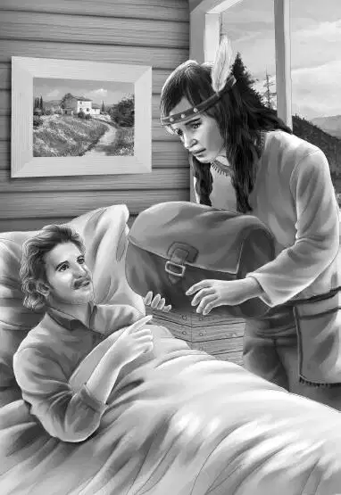

The family was so surprised to find an Indian woman instead of a man that no one said anything.
The room they looked into had two chairs and a couch. On a table lay an Indian basket that was not yet finished. Bunches of sweet grass were hung up to dry. The room was sweet with the smell of the grass.
“Sit down，” said the Indian woman. She took the rocking chair，and Mr. Alden sat in the other chair. Mr. Carter sat on the couch and the others sat on the floor.
Still no one had said a word. Then Benny，who was nearest the Indian woman，spoke. He said，“That man is my grandfather，James Alden. John Carter is sitting on the couch. I am Benny and there is my brother Henry and my sisters，Jessie and Violet.”
The old woman said，“My name is Lovan Dixon. I am almost ninety years old.”
“Well！” exclaimed Benny.
Jessie said，“We were on Flat Top all night and saw your light. We were worried thinking somebody might be in trouble.”
“You are very kind，” said the woman.“Why were you on Flat Top？Did you have an accident？”
“Yes，I did，” said Benny.“When I was coming down，the first step broke away. But I don’t think about that any more. Grandfather said there was no use in it.”
The Indian woman turned to Mr. Alden.“He was right，” she said.“I heard all the rocks coming down like thunder. I was worried about you. I saw your fire all night.”
Violet looked at the old Indian and asked，“Is anything wrong？”
“Not now，” said the woman.
Then Benny cried，“Do you really want to live all alone here？”
“Yes，child，” said Lovan Dixon.“I do want to. I do not like living in a town. Too many people laugh at Indian ways. I like to live alone.”
Violet and Jessie looked around at the house. It was neat and clean. The old woman’s gray hair was as smooth as silk. Her strong old face was deeply wrinkled.
Benny shouted，“Those people were mean. I’d like to tell them so.”
“You are a kind boy. There is no need to bother with anyone. I like it here. I love the woods. I am the last of my people. My tribe always lived here and the government gave these woods to my tribe long ago. The woods go to the other side of Flat Top.”
Now Grandfather spoke，“But I have a feeling that something is bothering you. Won’t you tell us？”
The old woman did not speak for a time and it was very quiet in her little house. Then she said，“I hear that the woods will be cut over for lumber and I will lose my land.”
Nodding，John Carter said，“It could be true，Miss Dixon. Many times，I am sorry to say，our government has forgotten its promises to the Indians.”
Mr. Alden said，“From this minute on do not worry any more. I know a man who will find out who owns this land. He will buy it himself if he has to. You may use it as long as you live，Miss Dixon.”
“Please say ‘Lovan，’ ”said the Indian woman with a bow.
“Lovan，” said Benny at once because he liked the sound of the name.“When that step gave way on Old Flat Top，I thought I saw a big hole behind it. Do you think that was really true？”
Lovan folded her arms and sat for a long time with bowed head. There was not a sound. After awhile she drew a long breath and said，“I trust you. Let me tell you a story. Years ago my grandfather told it to me， and he heard it from his grandfather. You ask about a hole，child. I believe there is a cave.”
For a minute Lovan did not say anything more. Then she went on，“You understand this happened years ago. There used to be a cave on the other side of Flat Top，but no cave where you say the hole is. In those days you couldn’t get up the mountain by your trail，but you could get up on the other side. Flat Top didn’t have such a flat top at that time.”
Every eye was on the old Indian woman. They hoped she would go on，and she did.
“The story goes that a Frenchman who was a friend of the King of France ran away to America to live. There was a war in France and he escaped. He was shot accidently right near here. My great-grandfather，Running Deer，hid him and took care of him until he died. The Frenchman had a great leather bag with things in it which he expected to sell. But when he died，he gave the bag to my great-grandfather for taking care of him.”

“What was in the bag？” cried Benny. Lovan smiled at Benny.“I never knew，” she said.“My great-grandfather died without telling anyone what was in it. But my grandfather thought that his father hid the bag in that old cave.”
“Why didn’t he go up and find it？” asked Benny.
Henry said，“Benny，you are asking too many questions.”
Lovan smiled a little. She said，“I don’t mind. Nobody has ever dared before. Something happened to that mountain and the rocks moved and closed the cave. It looked as if it had been squashed together. That was when Flat Top became flat.”
Mr. Carter said，“Didn’t anyone try to dig the cave out？”
“No，the rocks were too heavy. Besides the climb was too steep.”
Jessie said slowly，“If that bag was ever found， wouldn’t it belong to you？”
Lovan bowed again.“Yes，” she said.“I am the last of the tribe and my grandfather told me it was mine.”
“Wouldn’t you expect to get it then，” asked Henry，“if somebody found it？”
“I don’t know，” said Lovan.“I have lost many things.”
Violet said，“Do you suppose the hole Benny found is a sort of back door to that cave？”
“I have no doubt of it，” said Lovan.
Mr. Alden said，“Don’t worry any more about anything. I myself will see that you get what is yours.”
Lovan said，“I am grateful to you. All I have left now is this house and my garden and my front step.”
“What about your front step？” asked Mr. Alden.
“Come and see，” said Lovan.“You must go down my step and watch.”
She followed them out with a cup of water in her hand. They watched her as she poured the water slowly into some hollows in the step.
“A big，enormous claw！” cried Benny.“It is almost as long as the step.”
“A dinosaur track！” shouted Henry.“I’ve seen one at college.”
Grandfather said，“Where did you get this？It is certainly a big piece of red sandstone.”
“Yes，” said Lovan.“It came from the ledge right over there. My grandfather thought it was the track of a big magic bird. They called it a thunderbird track.”
Benny laughed.“That’s a car，” he said.
Mr. Carter said，“They named the car for the magic bird.”
“I suppose you know，” said Jessie，“that a museum would like your step.”
“But I want my doorstep，” said Lovan.
“And you shall keep it，” said Mr. Alden.“The man who buys your woods would want you to have it. And now I think we should go. Thank you for everything.”
“But we’ll be back，” said Benny. He gave Lovan a great smile，the kind only Benny could give.